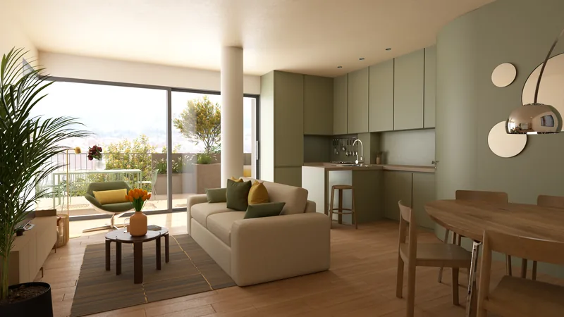

Samuele Silvestri, italienischer Architekt in Modena
Architektonische Forschung und Planung, vom konstruktiven Detail bis zum städtebaulichen Maßstab. Zeichnung, Virtual Reality, partizipative Planung und kompositorische Forschung prägen eine Methode, die auf Zuhören und gestalterischer Klarheit beruht.
Jedes Projekt entsteht, um die Herausforderungen des zeitgenössischen Raums wirksam und innovativ zu beantworten. Nach beruflichen Stationen in Mantua, Berlin und Rom arbeitet das Studio heute in Modena, plant und saniert Wohnungen und Gewerberäume und kommuniziert auf Englisch und Italienisch.
Grundlage der Arbeit ist eine genaue Auseinandersetzung mit dem Kontext, mit der Qualität des Raums und mit den Bedürfnissen der Bauherren. Die Spezialisierung auf das Bauen im historischen Bestand und in UNESCO-Welterbestätten ermöglicht es, jeden Eingriff mit Sensibilität und großem Respekt vor dem Bestehenden anzugehen.
Methode
Jedes Projekt beginnt mit Zuhören und mit einer Bestandsaufnahme des vorhandenen Raums. Zeichnungen, Renderings und Virtual Reality machen den Entwurf vor Baubeginn sichtbar und helfen, Grundriss, Materialien und Licht gemeinsam mit den Bauherren festzulegen.
Das Studio übernimmt anschließend die Genehmigungsverfahren, die Bauleitung und den Entwurf von Maßmöbeln.
Wo das Studio arbeitet
Das Studio hat seinen Sitz in der Via Asiago 58 in Modena und arbeitet in ganz Italien. Zu den jüngsten Projekten gehören die Innenräume von Le Pietre, einem neuen Wohngebäude in Castelfranco Emilia, die beiden Wohnungen in der Via Carteria und das Bar-Restaurant Anita, beide in der Altstadt von Modena, die Wohnungen Casa AD und Casa CM, eine Villa in Casalgrande bei Reggio Emilia sowie die Wettbewerbsbeiträge Spazio Persona in Fano und Mensa universitaria De Gennaro in Neapel.
Kunden aus dem Ausland
2022 betreute Samuele Silvestri bei Interalia Architects in Rom die Sanierung einer Wohnung an der Piazza Navona für eine englische Kundin. Wer im Ausland lebt, kann ein Projekt auch aus der Ferne verfolgen: Videocalls, Renderings, Virtual Reality und Videos zeigen die Räume und erleichtern Entscheidungen; Reisen nach Italien sind nur in wichtigen Momenten nötig. Das Studio kümmert sich um die italienischen Baugenehmigungen und, bei denkmalgeschützten Gebäuden, um die Abstimmung mit der Soprintendenza, der Denkmalbehörde. Mehr dazu im Artikel Ein Haus in Italien aus dem Ausland sanieren.
Studien zur Form
Neben der Architektur entstehen im Studio experimentelle Studien zur elementaren Form mit unterschiedlichen Oberflächenbehandlungen: eine Untersuchung von Material, Farbe und Licht, die in Form von Schmuck Gestalt annimmt, etwa in den Serien Alberi aus Titan und Cielo aus Keramik.
Zusammenarbeit
Für Architekturvisualisierungen arbeitet das Studio mit VISION zusammen, einem Studio in Modena, das auf fotorealistische Bilder und Virtual Reality spezialisiert ist. Die Innenräume von Le Pietre wurden für Modena Ingegneria nach dem architektonischen Entwurf von TT Architettura geplant; das Projekt in der Via Carteria entsteht gemeinsam mit Alessandro Orrea (Geometra); Casa AD wurde mit tilde studio geplant.

Zwei Wohnungen

Bar und Restaurant

Innenarchitektur, Wohnungen

Schmuck aus Titan
Kontakt
Um über ein Projekt zu sprechen, schreiben Sie an info@samuelesilvestriarchitetto.com oder rufen Sie +39 366 493 8286 an. Das Studio befindet sich in der Via Asiago 58 in Modena, arbeitet in ganz Italien und kommuniziert auf Englisch und Italienisch.